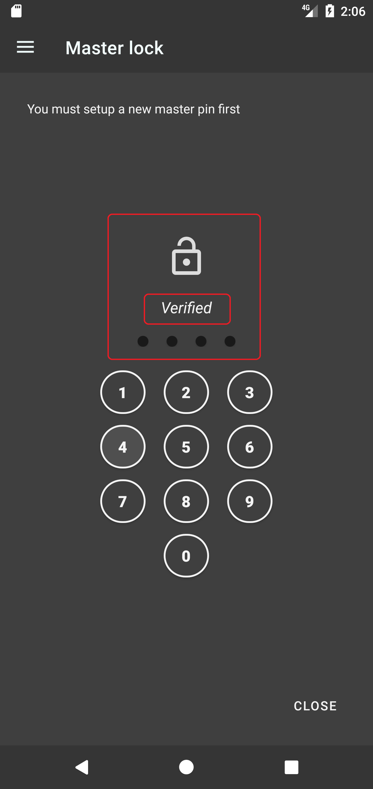

Master lock
Master lock
Writer journal introduces a security feature called master lock, it is a 4 digits PIN code that you can use to lock documents and folders. Before using this feature, you have to set up a new master lock PIN code first.
How to setup a master lock?
To setup a new master lock, open Navigation side bar, select Master lock. If you have not yet set up any master lock, you will see a message at the top saying "you must setup a new master pin first", this message indicates that there are currently no master lock available. Enter a four digits PIN code using the number pad, and enter it again for confirmation, once you confirmed your master pin code, you will see a "verified" message indicating your master lock has been successfully configured. And you will be redirected to Home page. Now you have successfully setup a new master lock. After setting up, you can use it to lock your documents and folders. (See the screenshots)
How to lock document or folder?
Before using your master lock, you have to make sure that it is "already verified", its verification is required every relaunch of the app. Please go to Master lock page, see if it is "already verified" , enter your master pin if it is not verified yet. Once you have it verified. You can start locking your documents. (See the screenshots)

Why my locked documents are still openable?
You may find it confusing that sometimes you found your locked documents are accessible without the need to enter Master PIN, this is not a bug, the reason behind this behavior is that you may have already verified your Master PIN code, thus Writer Journal is not asking you to verify it again until you relaunch the app and access locked document again. So the rule of thumb is that you will have to verify your Master PIN code every time you launch the app.
Why my locked documents are not shown in the search page or recent page?
Because you have not yet verified your Master PIN code, you have to verify your Master PIN code first so that your locked documents become searchable and will be visible in search, recent or pinned pages.